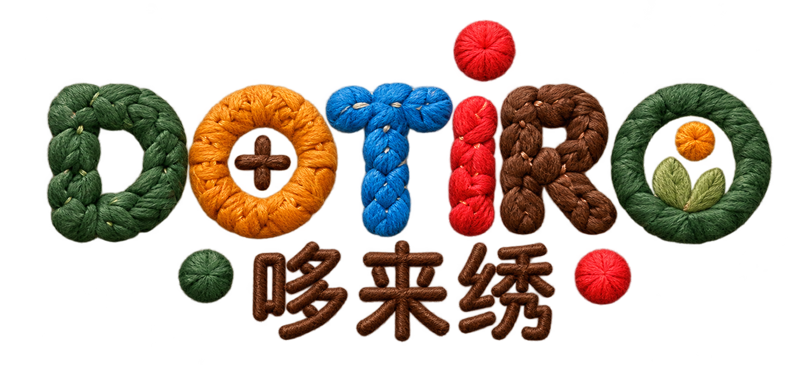

路线实验 · 第五版 · 深思挑战同类连完再换 · 针点也要走完 · 每格只走一次
图案进度 · 顺序由你选
图案、针点和挡线怎么玩？
所有小样都从“起”出发。上下左右连接。同一种图案全部连完，才可以自由选择下一种，没有规定的图案顺序。小针孔是通用针点：任何一组都可以经过它，经过时不换图案。图案和针点都必须走完，每格只能经过一次。深棕色短挡线封住两格间的连接，要从旁边绕行。上方的图案数字只表示完成数量，不表示先后顺序。
可以点按相邻格，也可以拖动连线。点已走格可退回该位置。大棋盘放不下时，先点“移动棋盘”再拖动查看；点“继续连线”恢复操作。方向键连接，退格键撤回。